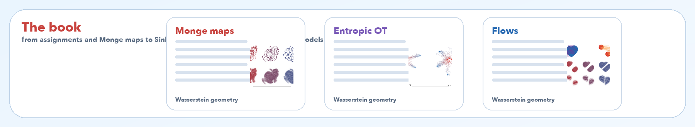
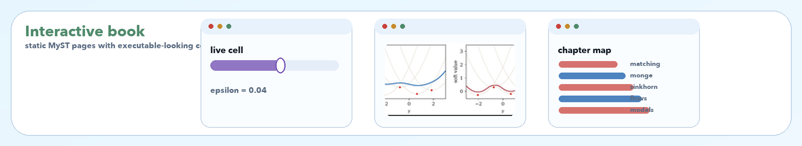
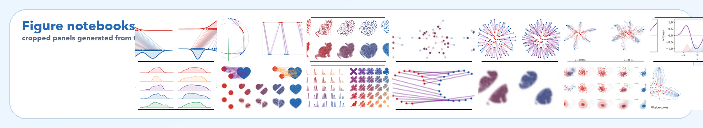
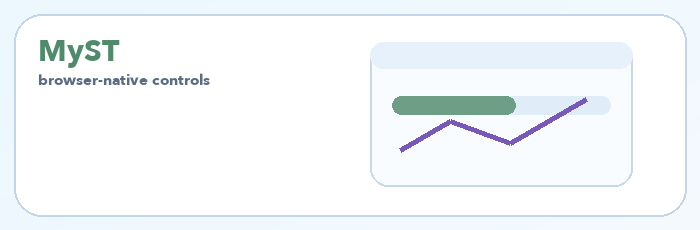
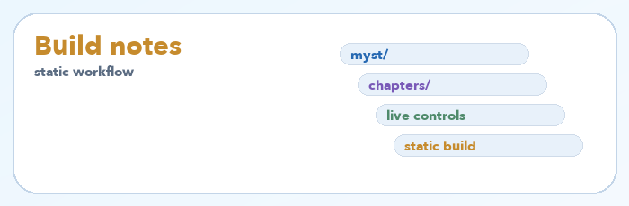
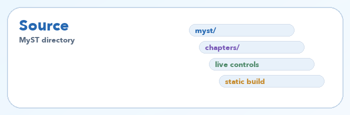
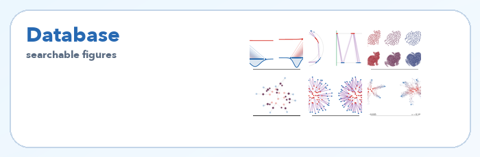
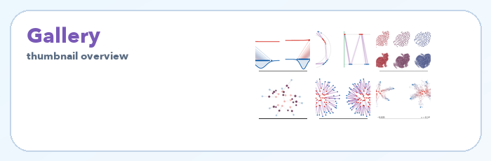
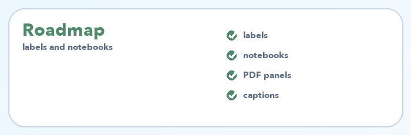

Book
arXiv and local PDFs
The main manuscript, a local PDF mirror, and a compact teaching version.

Interactive book
MyST web version
A static web book with executable-looking cells and browser-native live controls.

Figure notebooks
Searchable figure database
A Nexus-style catalogue of notebooks that regenerate the book figures.

Teaching
Teaching notebooks
Eight self-contained notebooks for assignments, Sinkhorn, semi-discrete OT, flows, diffusion, and discrete diffusion.

Slides
Course slide decks
Four lecture decks covering computational OT foundations and modern extensions.

Resources
Bibliography and software
A separate page for books, surveys, long reviews, and OT software libraries.
The Book
The manuscript develops optimal transport from finite assignments to Monge and Kantorovich formulations, Sinkhorn algorithms, generalized distances, gradient flows, and transportation-based generative models.
Interactive Book
The MyST version mixes the converted manuscript with executable cells and lightweight JavaScript controls. It is built statically, so the live controls can run in the browser without a Python server.
Rendered site
Static MyST book
Open the browser version generated from the MyST sources.

Documentation
Build notes
Local workflow, static-site build, and offline behavior of the live controls.

Source
MyST directory
Source material for the experimental interactive version.
Figure Notebooks
The figure gallery is a searchable database: filter by concept or book section, inspect thumbnails, open notebooks on GitHub, and launch them in Colab.

Rendered database
Searchable gallery
Search, filter, and open the figure notebooks from a compact visual index.

Markdown
Notebook gallery
The GitHub-readable gallery with thumbnails, notebook links, and Colab badges.

Planning
Figure roadmap
The section-organized list of figure labels, notebooks, and implementation status.
Teaching Notebooks
Self-contained notebooks for classroom use and quick experimentation. Each can be opened in GitHub or launched directly in Colab.


Course Slides
Four slide decks provide a lecture-oriented route through the computational OT material.
Further Resources
Books, long reviews, surveys, and software are kept on a dedicated page so the homepage stays compact.
Open the resource portal for the bibliography, review articles, and software libraries supporting the book and its computational examples.